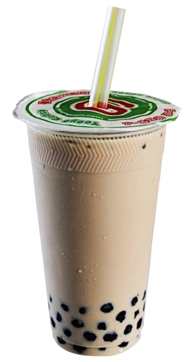

研究论文导读
这篇文章不把“茶有益健康”当成一句空泛口号，而是把它拆开来看：论文真正研究的是什么？研究结果能支持到哪一步？商业宣传又往往把它夸大到了哪一步？
在中文互联网里，“茶”和“代谢健康”几乎是一组天然会被放在一起的词。人们一说到减脂、控糖、轻负担、体重管理、饭后饮品、养生习惯，很快就会把茶拉进讨论里。原因并不复杂：茶既有一种天然饮品的公共形象，又不像高糖饮料那样自带负担感；再加上茶多酚、儿茶素、咖啡因这些词早就被大众健康传播不断放大，于是很多消费者很容易形成一个印象——只要是“茶”，似乎就自动更健康。
问题是，论文并不是这么写的。研究者讨论“茶与代谢健康”时，真正关心的通常不是一句笼统的“茶好不好”，而是更具体的问题：茶是否可能在某些条件下影响能量摄入、饮品替代、体重变化、脂代谢、餐后血糖波动、炎症状态，或者与更健康的生活方式形成某种关联。也就是说，研究讨论的是一个复杂系统，而不是一个神奇结论。把这件事讲清楚，才是论文导读真正该做的工作。

研究主题：茶、代谢健康、体重管理、血糖、脂代谢与饮品替代 论文类型：以综述性论文、观察研究、机制研究、部分干预研究为主 核心问题：茶在代谢健康中的作用，究竟是来源于成分本身，还是来源于它作为一种低负担饮品的替代价值？ 适合谁看：关心“健康茶饮”“控糖茶”“减脂茶”是否靠谱的人，以及经常在商业茶饮与健康宣传之间感到混乱的人
这可能是整个话题里最重要、也最容易被忽略的区分。很多论文里讨论的“tea”，往往接近纯茶、较简单的茶饮形式、标准化茶提取物，或者对摄入量、条件、成分做了相对清楚控制的实验材料。可现实生活中，大量消费者面对的是另一种东西：奶基底很多、糖很多、风味添加很多、杯量很大、情绪价值很强、名字里带一个“茶”字的商业饮品。
这两者之间不能直接画等号。一杯纯茶、少糖轻乳茶、全糖奶盖果茶、植脂末奶茶、加料甜饮，虽然都可能被叫作“茶饮”，但它们的代谢意义完全不同。研究里看到的任何积极信号，一旦脱离了这个基本区分，几乎都会被误读。真正严谨的讨论，第一步不是问“茶能不能减脂”，而是先问“你说的到底是哪种茶，哪种饮法，哪种总负担”。
原因大致有三层。第一层，是成分层面的可能性。茶中的多酚类、儿茶素、咖啡因等成分，长期以来一直是营养与机制研究喜欢追踪的对象。第二层，是饮品替代逻辑。相比很多高糖饮料，茶本身通常热量更低，也更容易成为一种日常高频饮品，这使它在公共健康视角下天然具有观察价值。第三层，是生活方式关联。经常喝茶的人群，往往同时拥有其他生活习惯差异，这既可能带来更好的健康表现，也会给研究解释带来混杂因素。
所以，茶会不断进入代谢健康研究，不是因为它一定有某个一锤定音的奇效，而是因为它同时踩中了“有成分可研究”“可长期高频摄入”“与生活方式高度相关”这几个条件。对研究者来说，这是一个非常值得持续观察的对象；对普通读者来说，这也意味着你不应该期待一句简单粗暴的答案。
如果把不同研究放在一起看，一个更稳妥的结论通常是这样的：茶可能在长期生活方式里发挥某种温和作用，尤其当它替代了一部分更高糖、更高热量、负担更重的饮品时，它的公共健康意义会更清楚。但这和短视频里常见的“某某茶三天掉秤”“饭后一杯轻松控糖”“奶茶也能健康瘦”完全不是一回事。
很多时候，茶的价值未必来自主动“增加了什么神奇效果”，而是来自它帮助一个人减少了某些更糟糕的选择。举例来说，如果一个人把高频的含糖饮料习惯，慢慢替换成较简单、较少糖的茶饮，这本身可能就已经是代谢管理上的积极变化。这个逻辑和“某个成分在实验里表现不错”相比，反而更接近现实生活，也更接近公共健康层面的真实意义。
这也是为什么我会更愿意把茶的价值描述为“长期饮食结构里的小变量”，而不是“瞬间改造身体的功能按钮”。越是把茶吹成速效工具，越容易偏离研究真正谨慎的表达方式。
只要一个饮品同时拥有“天然”“植物”“茶”“东方”“轻负担”这些词，它就非常容易在商业传播中被自动提升为更健康的选择。问题在于，商业世界并不会自动把“低负担的茶”与“高糖高热量的甜饮”区分得很清楚。它更喜欢借用研究里关于茶的积极形象，为现实里的复杂产品提供健康感背书。
于是就出现了一个常见现象：产品名字、宣传语、社交平台话术都在暗示“这是一杯更健康的东西”，但如果你真的去看配料、糖、热量、杯型和饮用频率，它可能与研究里更有意义的茶饮形式相差很远。也就是说，很多“健康茶饮”的真正卖点并不是被证据充分支持的健康效果，而是一种被包装出来的健康感。这种健康感在商业上很有用，在研究意义上却往往站不住脚。
因为它们直接命中大众焦虑。代谢健康不是抽象概念，它和体重、外形、疲劳感、餐后状态、长期慢病风险都紧密相关。只要一个品牌能让消费者觉得“这杯喝下去负担没那么重”，哪怕这种感觉更多来自词语而不是事实，也已经足够有效。所以营销喜欢抓住这类词，而普通读者最需要训练的，恰恰是把感觉和事实分开。
真正值得问的不是“它是不是控糖茶”，而是：它总糖多少？杯量多大？我喝的频率有多高？它是不是替代了本来更差的选择，还是让我因为“听起来健康”反而喝得更多？这些问题比一个漂亮概念重要得多。因为研究最终落回现实生活时，决定代谢结果的往往不是概念，而是总量、频率、结构和习惯。
最有用的理解不是“以后只喝某一种神奇的茶”，而是学会用更现实的框架看待饮品选择。第一，看替代关系：它是不是在替代更高糖、更高热量的东西？第二，看总负担：糖、热量、奶基底、加料、杯量到底如何？第三，看频率：偶尔喝和高频习惯，代谢意义完全不同。第四，看自己会不会被“健康感”误导，反而扩大了饮用量。
这套框架看起来不浪漫，但它比“哪种茶能快速改善代谢”更接近真正有帮助的答案。公共健康从来不是靠一两个神奇产品达成的，而是靠很多微小、可持续、长期可执行的替代和调整。茶之所以值得被认真讨论，也恰恰是因为它可能属于这种长期变量，而不是因为它适合被神化。
第一，很多研究并不是大规模长期随机对照临床试验。第二，即便有积极信号，也常常是“可能相关”“可能有帮助”“在某些条件下观察到变化”，并不是“普遍适用于所有人”。第三，茶的形态差异太大：绿茶、乌龙、红茶、抹茶、商业奶茶、瓶装茶、代糖茶饮，它们不能被简单视作同一种东西。第四，代谢健康本身就是复杂系统，很难把结果只归因到一种饮品。
所以我更愿意把茶与代谢健康的研究，理解为一个“值得认真看、但必须谨慎读”的领域。它里面有意义，也有边界；有方向，也有不确定性。真正好的论文导读，不是帮读者更快相信某种神话，而是帮读者更清楚地知道：哪里可以期待，哪里必须保留怀疑。


- 研究中讨论的常常是纯茶或简单茶饮，不等于现实中的高糖奶茶。 - 不同人群、不同生活方式下结果差异很大。 - 观察研究很容易受到生活习惯差异的影响。 - 即使看到积极信号，也不意味着可以独立替代整体饮食和运动管理。
如果非要把这类研究翻译成一句最有用的话，那就是：别把茶神化，但也别低估它作为长期饮品替代选择的价值。对于很多人来说，一杯相对简单、相对低负担的茶饮，意义可能不在于它能不能“直接燃脂”，而在于它是否帮助你建立了一个更稳、更轻、更少糖的日常结构。现实生活里，这往往比任何夸张宣传都更重要。
因为它同时借了两层好感。第一层是“茶”本身的好感：天然、植物性、日常、传统、似乎比汽水和甜点型饮品更克制。第二层是“健康”这个词自带的减压功能：只要它出现，消费者就更容易默认自己正在做一个值得原谅、甚至值得鼓励的选择。问题在于，这两个词放在一起时，很容易把一个本该继续细看的产品，过早地从审查名单里划出去。
真正的麻烦不是偶尔出现一杯确实更轻一点的茶饮，而是当“健康茶饮”变成一种普遍自我安慰模板：只要名字里有茶，只要文案里出现原叶、低糖、轻乳、少负担、真茶底，就好像整杯饮料已经自动完成了代谢层面的洗白。研究不会这样说。研究里最重要的变量从来还是总糖、总热量、杯量、饮用频率、替代关系，以及整体饮食和活动结构。也就是说，代谢健康看的是结构，不是安慰感。
因为研究很少会给一杯饮料颁发彻底无罪证书。它更常说的是：在某些条件下、相对另一种选择、对某些人群、在某些长期习惯里，某种饮用方式可能更合理。这种表达没有爆款标题那样利落，却更接近现实。现实生活中的代谢健康，本来就很少由单一产品决定，它更像一串长期累积的小选择。
从这个角度看，茶真正值得珍惜的地方，常常不是它能不能承担一个特别夸张的“功能性”角色，而是它有没有机会成为一种更容易长期坚持的轻负担饮品形式。只要把这个顺序看清，很多热门误读就会自动失去吸引力：你不再急着问“哪一杯最燃脂”，而会先问“哪一杯更少把我推回高糖高负担的旧路径里”。
如果你面对的是一杯打着“健康茶饮”旗号的产品，最实用的判断顺序可以很简单：先看它是不是实质性地减轻了糖和总负担，再看它是不是比你原本会喝的东西更合理，最后再看它是否会因为“听起来更健康”而让你更高频、更大杯、更放心地喝。只要这三步不乱，很多营销语言就很难直接带着你跑。
所以，这篇文章真正想留下的结论也很明确：茶和代谢健康之间确实有值得认真研究的关系，但这层关系最可靠的部分，往往不是神奇，而是替代；不是速效，而是结构；不是一句漂亮的“健康茶饮”，而是一套更少糖、更可持续、也更不容易自我欺骗的日常饮用方式。